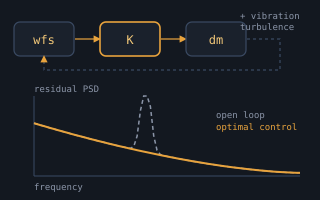
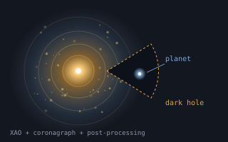
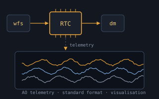
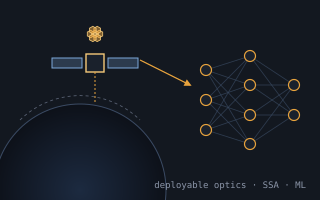

Research & Development
Research Topics

Super-sensitive wavefront sensing
We develop ideas on:
- Super-sensitive wavefront sensors — we’re currently integrating a pyramid (modulated) in our lab
- Non-linear wavefront sensing — give linearity away, reach out to new sensitivity realms
- Spot-shrinkage for elongated laser-guide-star wavefront sensing on existing detectors

Post-processing AO-corrected telemetry / PSF reconstruction
Post-processing of partially corrected AO data for the reconstruction of the PSF is an extremely complex task, already in classical AO, let alone wide-field. We’re developing software classes to:
- Reconstruct PSF out of tomographic MOAO systems
- Provide Keck Observatory with a PSF reconstruction pipeline for the NGS and LGS modes
- Pursue research leading to a working pipeline for the AOF’s MUSE instrument in wide and narrow field modes
- Collaborate with NRC’s Herzberg Institute of Astrophysics in support of PSF reconstruction for LTAO systems (useful for our HARMONI project)
- Collaborate with TMT PO on their effort to perform PSF reconstruction with MCAO systems

Advanced tomography reconstruction methods
Turn-key AO requires robustness to operate 100% of the time at full performance. New processing architectures are needed to tackle the curse of dimensionality (scaling with the fourth power of the telescope diameter D⁴) while making efficient use of combined LGS and NGS measurements in any of the WFAO modes. We’re acquiring expertise and leading efforts in:
- Fast wavefront reconstruction in the spatial-frequency domain
- Multi-time-step tomographic reconstruction
- Iterative, large-scale tomographic reconstruction
- Kalman filters for large numbers of degrees-of-freedom architectures

Advanced AO control
Optimal control squeezes the last nanometres out of an AO loop: it models the turbulence, the vibrations and the dynamics of the mirrors, and uses them to predict and correct. We work on:
- Minimum-variance and LQG control, including deformable mirrors with their own dynamics and woofer–tweeter systems
- Vibration identification and suppression for ELT-class systems and the VLTI
- Wavefront control strategies for ELT instruments, such as stable DM fitting without modal truncation
- Learning-based control, including reinforcement learning for extreme AO

Modelling software development
We support the development of OOMAO, an object-oriented Matlab Adaptive Optics library. Objects from the different classes are assembled to perform the numerical modelling of adaptive-optics systems; OOMAO can be seen as an extension of the Matlab language, with overloaded operators used to propagate the wavefront through the system and update object properties.
- OOMAO (Public)
- OOMAO (Private) — intended for internal development in LAM
It’s licence-free and free-of-charge. As a future user, you’re welcome to add to it and become an official co-developer — drop me an email.

Atmospheric parameter characterisation and identification
Atmospheric parameter identification is paramount for the runtime optimisation of tomography and the post-processing of AO telemetry.

Phase-diversity for system calibration
As part of our running collaborations, we hosted Masen Lamb, PhD student at UVic, for 4 months (Mar–Jun 2016) to develop phase-diversity algorithms for AO systems calibration. These are now being applied to:
- Fine co-phasing of segmented telescopes
- Off-line calibration of non-common-path aberrations
- Calibration of low-wind-effect

High-contrast imaging, extreme AO & exoplanets
Seeing a planet next to its star needs a very deep correction and a clean control of the residual halo. We contribute to the adaptive optics, the instrument concepts and the data analysis for:
- Extreme AO and coronagraphy for the ELT Planetary Camera and Spectrograph (PCS)
- The wind-driven halo and the low-wind effect in SPHERE and GRAVITY+
- High-contrast imaging concepts and post-processing, from NFIRAOS/IRIS to speckle suppression
- Exoplanet detection with radial-velocity spectrographs and with VLTI/GRAVITY+

Real-time computing & AO telemetry
An ELT-scale AO system has to compute thousands of actuator commands within a millisecond, and produces a flood of data that is valuable well beyond the loop itself. We work on:
- Real-time computer design and performance modelling for ELT-scale AO, including GPU-based pipelines for METIS and the Keck RTC upgrade
- A standard format for AO telemetry, to exchange and reuse data across observatories
- Virtual access to telemetry and advanced visualisation tools

Space optics & machine learning
The tools of adaptive optics carry over to space, and machine learning is starting to replace hand-made models where they fall short. We work on:
- Deployable CubeSat telescopes for Earth observation and astronomy, and their phasing and error budgets
- Space situational awareness with event-based (neuromorphic) sensors — see NEUROSPACEAWARE
- Deep learning for phasing segmented telescopes and for wavefront sensing
- Reinforcement learning for the control of extreme AO systems